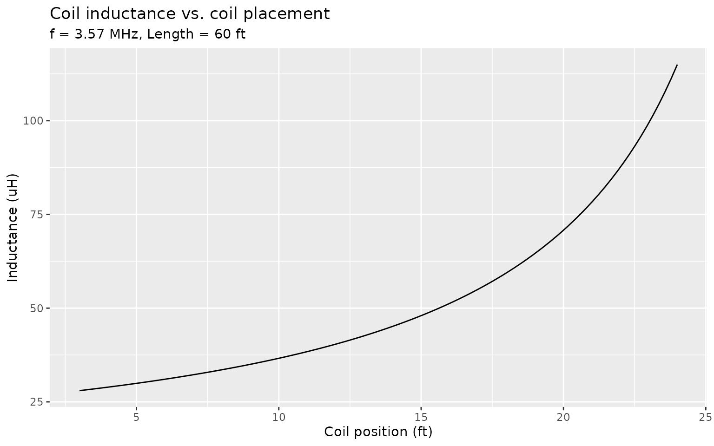
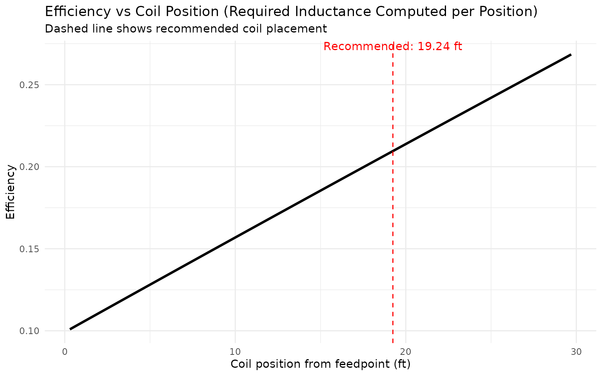
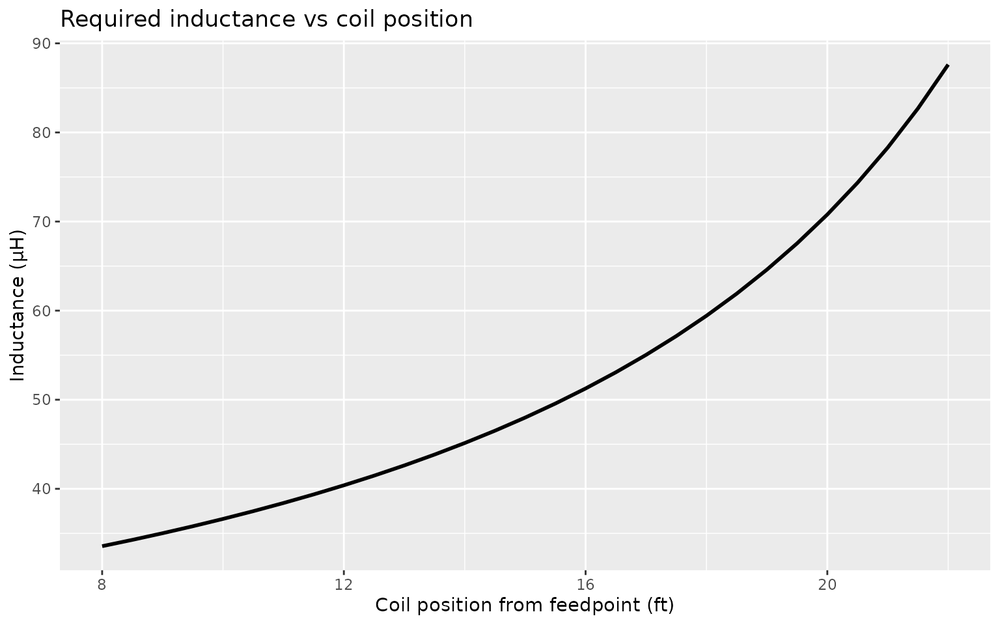
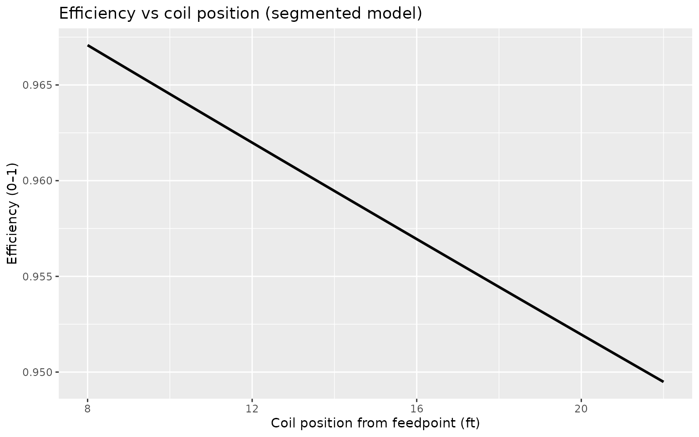
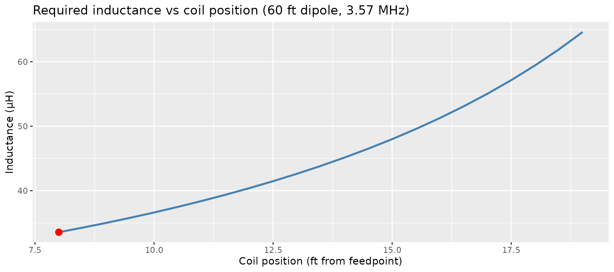
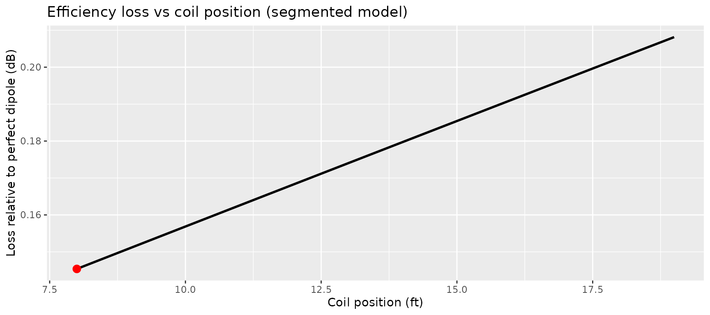
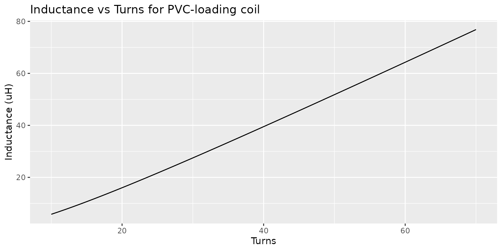

Designing a 60 ft Loaded 80 m Dipole with loadedDipole
Source:vignettes/loadedDipole-60ft-80m.Rmd
loadedDipole-60ft-80m.RmdOverview
This vignette walks through the design of a shortened 80 m dipole for 3.57 MHz FT8, using a total wire length of 60 ft and a pair of available 66 µH loading coils.
We will:
- Compute the recommended coil placement.
- Visualise inductance versus coil placement.
- Estimate radiation efficiency for the final design.
Antenna and coil parameters
frequency <- 3.57 # MHz (FT8)
total_length <- 60 # ft
L_coil <- 66 # microhenry per coil1. Recommended coil placement
rec <- recommend_coil_position(
frequency = frequency,
total_length = total_length,
inductance = L_coil
)
rec## Loaded dipole recommendation:
## Frequency : 3.5700 MHz
## Total length : 60.0000 ft
## Coil inductance : 66.0000 uH (per coil)
## Coil position : 19.2429 ft from feedpoint
## Fraction of half : 0.641The output reports the recommended distance from the feedpoint to each coil (per leg) and the fraction of the half-element length at which the coils are placed.
2. Inductance versus placement
plot_inductor_placement(
frequency = frequency,
total_length = total_length
)
This plot shows the required inductance as a function of coil position for the chosen frequency and total length. The recommended coil position is indicated by a dashed vertical line.
3. Efficiency estimate
eff <- estimate_efficiency(
frequency = frequency,
total_length = total_length,
coil_inductance = L_coil,
coil_position = rec$coil_position,
model = "both"
)
eff## $efficiency_simple
## [1] 0.9397193
##
## $efficiency_segmented
## [1] 0.9529011
##
## $efficiency
## [1] 0.9463102The resulting table reports approximate radiation resistance, loss resistance and overall radiation efficiency for two simple models:
-
simple: short-dipole radiation resistance plus coil loss. -
segmented: adds crude wire and ground loss and a tapered current model.
The estimates are intended for comparative design work and trade-off studies rather than as a replacement for full NEC modelling.
4. Efficiency vs Coil Position (Realistic Sweep)
In this section we sweep coil position and compute the required inductance at each position, then evaluate the efficiency. This gives a realistic view of how coil placement affects performance.
library(ggplot2)
wire_diameter = 0.065
# sweep from 10% to 90% of half-length
half_len <- total_length / 2
fractions <- seq(0.01, 0.99, by = 0.01)
coil_positions <- fractions * half_len
eff_list <- lapply(seq_along(coil_positions), function(i) {
B <- coil_positions[i]
# compute required inductance at this coil position
L_req <- loading_coil_inductance(
frequency,
total_length = total_length,
coil_position = B,
wire_diameter = wire_diameter,
metric = FALSE
)
# compute efficiency using segmented model
eff <- estimate_efficiency(
frequency = frequency,
total_length = total_length,
coil_inductance = L_req,
coil_position = B,
model = "segmented"
)
data.frame(
coil_position = B,
fraction_of_half = fractions[i],
inductance = L_req,
efficiency = -10 * log10(eff$efficiency)
)
})
eff_df <- do.call(rbind, eff_list)
# plot the result
ggplot(eff_df, aes(x = coil_position, y = efficiency)) +
geom_line(size = 1.1) +
geom_vline(
xintercept = rec$coil_position,
linetype = "dashed",
color = "red"
) +
annotate(
"text",
x = rec$coil_position,
y = max(eff_df$efficiency),
label = sprintf("Recommended: %.2f ft", rec$coil_position),
vjust = -0.5,
color = "red"
) +
labs(
x = "Coil position from feedpoint (ft)",
y = "Efficiency",
title = "Efficiency vs Coil Position (Required Inductance Computed per Position)",
subtitle = "Dashed line shows recommended coil placement"
) +
theme_minimal()## Warning: Using `size` aesthetic for lines was deprecated in ggplot2 3.4.0.
## ℹ Please use `linewidth` instead.
## This warning is displayed once every 8 hours.
## Call `lifecycle::last_lifecycle_warnings()` to see where this warning was
## generated.
This sweep computes:
- the actual required inductance at each B
- the corresponding coil loss
- the effect of shortening on radiation resistance
- and thus the true efficiency curve
Optimizing coil inductance vs placement
A common design question is:
“If I move the coils inward, can I use a smaller inductance without hurting efficiency?”
optimize_inductance_for_position() allows us to sweep
coil placements, compute the required inductance, and optionally compute
efficiency.
Here we analyze a 60 ft 80-meter dipole at 3.57 MHz:
positions <- seq(8, 22, by = 0.5) # ft from feedpoint
opt_df <- optimize_inductance_for_position(
frequency = 3.57,
total_length = 60,
positions = positions,
efficiency = TRUE,
efficiency_model = "segmented"
)
opt_df## coil_position inductance eff_segmented
## 1 8.0 33.56123 0.9670797
## 2 8.5 34.27028 0.9664402
## 3 9.0 35.01492 0.9658015
## 4 9.5 35.79772 0.9651637
## 5 10.0 36.62151 0.9645267
## 6 10.5 37.48939 0.9638906
## 7 11.0 38.40478 0.9632553
## 8 11.5 39.37147 0.9626208
## 9 12.0 40.39365 0.9619872
## 10 12.5 41.47597 0.9613544
## 11 13.0 42.62362 0.9607224
## 12 13.5 43.84239 0.9600913
## 13 14.0 45.13876 0.9594610
## 14 14.5 46.52003 0.9588315
## 15 15.0 47.99443 0.9582028
## 16 15.5 49.57129 0.9575750
## 17 16.0 51.26121 0.9569480
## 18 16.5 53.07632 0.9563218
## 19 17.0 55.03050 0.9556964
## 20 17.5 57.13979 0.9550718
## 21 18.0 59.42280 0.9544481
## 22 18.5 61.90120 0.9538251
## 23 19.0 64.60045 0.9532030
## 24 19.5 67.55064 0.9525817
## 25 20.0 70.78758 0.9519612
## 26 20.5 74.35429 0.9513414
## 27 21.0 78.30285 0.9507225
## 28 21.5 82.69702 0.9501044
## 29 22.0 87.61569 0.9494871We can now visualize how inductance and efficiency vary with coil placement:
ggplot(opt_df, aes(x = coil_position, y = inductance)) +
geom_line(size = 1) +
labs(
title = "Required inductance vs coil position",
x = "Coil position from feedpoint (ft)",
y = "Inductance (µH)"
)
ggplot(opt_df, aes(x = coil_position, y = eff_segmented)) +
geom_line(size = 1) +
labs(
title = "Efficiency vs coil position (segmented model)",
x = "Coil position from feedpoint (ft)",
y = "Efficiency (0–1)"
)
This demonstrates that:
- Moving coils inward reduces required inductance dramatically
- Efficiency stays nearly flat, as expected for a short 80-meter
dipole
- Practical positions (≈10–15 ft from the feedpoint) allow much smaller, lower-loss coils without meaningful loss of radiated power
Designing a loaded dipole when only the total length is known
Often a builder only knows the available span (e.g., 60 ft) and wishes to design the rest of the antenna with the constraint that the loading coils must not exceed some value. Here we solve the problem for a 60 ft dipole at 3.57 MHz, allowing coils of up to 66 µH.
library(loadedDipole)
design <- design_loaded_dipole(
frequency = 3.57,
total_length = 60,
L_max = 66
)
design$best## coil_position inductance efficiency loss_dB
## 1 8 33.56123 0.9670797 0.1453773The output gives the recommended coil placement and inductance that:
- Requires no more than 66 µH,
- Is within 0.1 dB of the best achievable efficiency, and
- Uses the smallest inductance within that range.
We can also visualize the entire design space:
library(ggplot2)
df <- design$designs
ggplot(df, aes(x = coil_position, y = inductance)) +
geom_line(color="steelblue", size=1) +
geom_point(data = design$best, aes(x = coil_position, y = inductance),
color="red", size=3) +
labs(
title = "Required inductance vs coil position (60 ft dipole, 3.57 MHz)",
x = "Coil position (ft from feedpoint)",
y = "Inductance (µH)"
)
ggplot(df, aes(x = coil_position, y = loss_dB)) +
geom_line(size=1) +
geom_point(data = design$best, aes(x = coil_position, y = loss_dB),
color="red", size=3) +
labs(
title = "Efficiency loss vs coil position (segmented model)",
x = "Coil position (ft)",
y = "Loss relative to perfect dipole (dB)"
)
Designing and Building the Loading Coils
Once the optimal coil inductance is found (e.g., ~33.5 uH at 8 ft
from the feedpoint), we can design the actual coils using PVC pipe and
common magnet wire. The function design_pvc_coil() computes
the required turns, coil geometry, and a ±2 turn table showing how
inductance varies with turn count.
In this example, we design a 33.5 uH coil on 1.5 inch Schedule 40 PVC with AWG 14 wire (0.064”) and 0.070” turn spacing:
coil <- design_pvc_coil(
inductance = 33.5,
pvc_size = "1-1/2",
wire_diameter = 0.064,
turn_spacing = 0.070
)
coil## $turns
## [1] 35.04055
##
## $winding_length_in
## [1] 2.452839
##
## $diameter_in
## [1] 1.9
##
## $wire_length_ft
## [1] 17.42983
##
## $summary_table
## turns inductance_uH winding_length_in
## 1 33 31.05284 2.31
## 2 34 32.25008 2.38
## 3 35 33.45121 2.45
## 4 36 34.65600 2.52
## 5 37 35.86422 2.59This gives:
- The computed turns (
coil$turns), - Winding length,
- Wire length,
- And a small table showing
turns +/- 2so you can easily trim or add turns.
We can also visualize inductance vs turns for this PVC size:
plot_coil_turns(
pvc_size = "1-1/2",
wire_diameter = 0.064,
turn_spacing = 0.070,
N_range = 10:70
)
In practice, wind one or two turns extra, measure the inductance using an LCR meter or analyzer, and remove/spread turns until the value matches the design target.